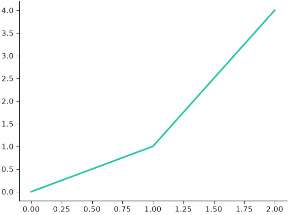
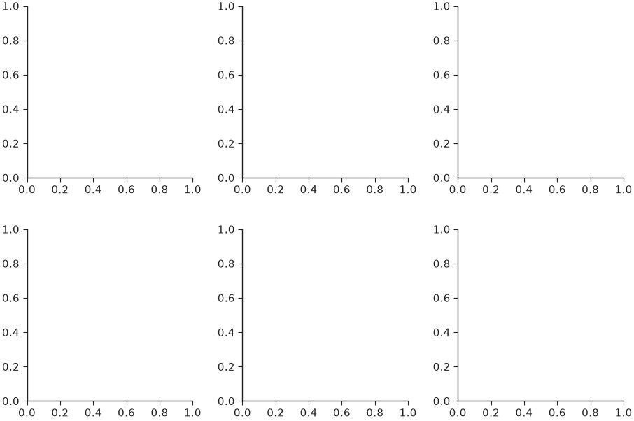
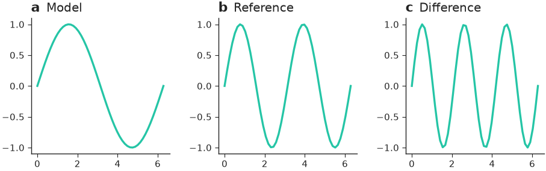
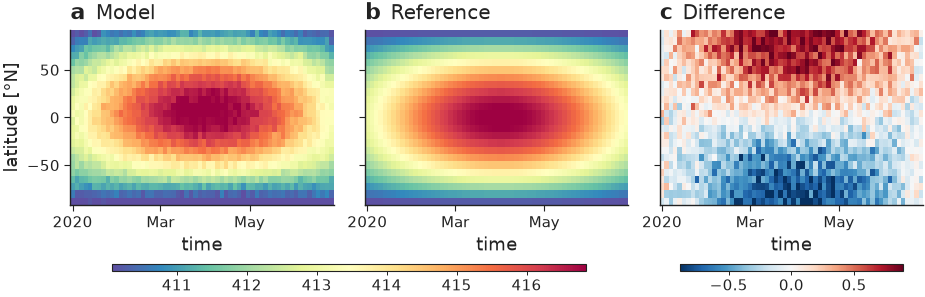
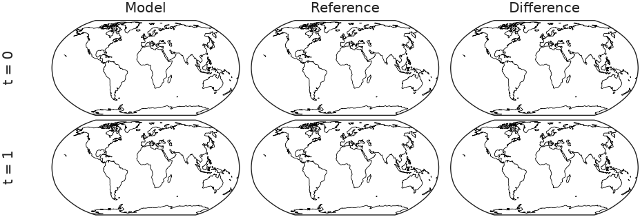
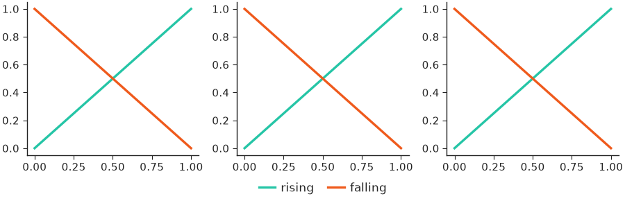
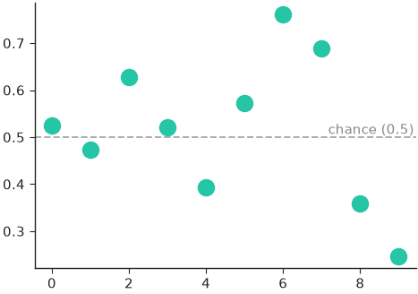
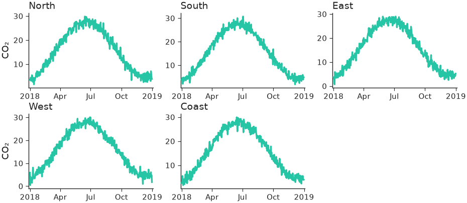
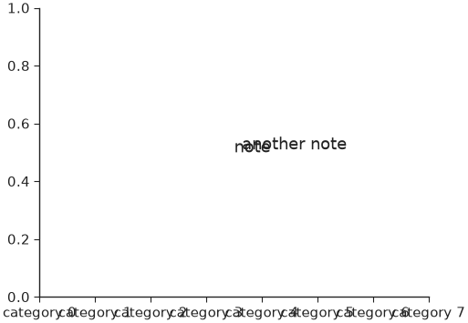

Figures & sizing¶
nicefigs creates figures at a physical size: give one dimension, usually a named width, and an aspect ratio, and the other dimension is solved. Fonts are in points (see Styling), so they render at exactly the theme's sizes in every panel of every figure.
Creating a figure at a physical size¶
subplots() is plt.subplots at a physical size. Name a
width and an aspect (height / width):
import nicefigs as nf
nf.set_theme("paper")
fig, ax = nf.subplots(width="single", aspect=0.75)
ax.plot([0, 1, 2], [0, 1, 4])
print(fig.get_size_inches().round(3))

The figure is 89 mm wide, one column of a two-column journal. For a grid of
panels, panel_aspect shapes each panel instead of the whole figure, and
wspace/hspace go straight to the gridspec:
import nicefigs as nf
nf.set_theme("paper")
fig, axes = nf.subplots(2, 3, width="full", panel_aspect=1.0, wspace=0.3, hspace=0.3)
print(axes.shape, fig.get_size_inches().round(2))

figure() creates a bare Figure the same way. Both take a
theme keyword applied while the figure is created, independent of the global
theme.
Width presets¶
figure_size() solves (width, height) in inches from
a name or explicit inches. It underlies every helper that creates its own
figure (map, image_grid, model_comparison, …):
import nicefigs as nf
for spec in (dict(width="single", aspect=0.75), dict(width=95 / 25.4, aspect=0.5), dict(width="slide-16-9")):
print([round(v, 2) for v in nf.figure_size(**spec)])
The named widths in WIDTHS are:
| Name | Inches | Typical target |
|---|---|---|
"single" |
3.50 | One column of a two-column journal (Nature 89 mm; AGU 95 mm; ICML 3.25 in) |
"onehalf" |
4.72 | 1.5 columns (Nature 120 mm) |
"double" |
7.20 | Both columns (Nature 183 mm; AGU 190 mm; ICML 6.75 in) |
"full" |
5.50 | Text width of a one-column article (NeurIPS) |
"half" |
2.75 | Half of "full" |
"third" |
1.83 | A third of "full" |
"slide" / "slide-half" / "slide-third" |
13.33 / 6.5 / 4.2 | 16:9 slide fractions |
For a venue whose width differs, pass inches, as with 95 / 25.4 above. The
canvases in CANVASES fix both dimensions:
"slide-16-9", "slide-4-3", "a4-portrait", "a4-landscape",
"poster-a0-portrait" and "poster-a0-landscape".
Labelling panels¶
label_panels() puts a bold lowercase a, b, c,
… above the top-left corner of each panel, optionally followed by a short
title. The letter has no parentheses, is 1.2 times the axis-label size, starts
flush with the panel's left edge, and sits half its own height above the top
edge; the title follows on the same baseline in normal weight, slightly
smaller:
import numpy as np
import nicefigs as nf
nf.set_theme("paper")
fig, axes = nf.subplots(1, 3, width="full", panel_aspect=0.8, wspace=0.35)
x = np.linspace(0, 2 * np.pi, 50)
for ax, k in zip(axes, (1, 2, 3)):
ax.plot(x, np.sin(k * x))
nf.label_panels(axes, titles=["Model", "Reference", "Difference"])

On cartopy map axes the label anchors to the panel's grid position, so labels line up down the left margin instead of hugging a narrow map.
If a panel already carries an ax.set_title(), for example from
hovmoller_panels(), pass use_ax_title=True to
move that title next to the letter, at one height:
import nicefigs as nf
from nicefigs import data
nf.set_theme("paper")
h = data.hovmoller_field(n_time=60, n_lat=24)
fields = {"Model": h["value"], "Reference": h["reference"], "Difference": h["value"] - h["reference"]}
fig, axes = nf.hovmoller_panels(fields, h["times"], h["lats"], diff_fields={"Difference"})
nf.label_panels(axes, use_ax_title=True)

Note
A title that already starts with its panel's letter, such as "a Model"
for label "a", loses that leading copy (dedupe=True). Pass
dedupe=False to draw both as given.
panel_label() labels a single axes,
clean_title() draws a left-aligned title at the
theme's title size, and despine() hides chosen spines.
Grids with row and column labels¶
grid() is a GridSpec-backed panel grid at a physical size.
It returns a (nrows, ncols) array of axes and takes width_ratios,
height_ratios and one projection for every panel.
row_labels() and col_labels()
add rotated row headers down the left margin and column headers above the top
row:
import cartopy.crs as ccrs
import nicefigs as nf
nf.set_theme("paper")
fig, axes = nf.grid(2, 3, width="full", panel_aspect=0.5, projection=ccrs.Robinson(), wspace=0.05, hspace=0.05)
for ax in axes.flat:
ax.set_global()
ax.coastlines(linewidth=0.3)
nf.row_labels(axes, ["t = 0", "t = 1"])
nf.col_labels(axes, ["Model", "Reference", "Difference"])

with_legend_row=True adds a short bottom row for one legend that spans the
figure, and returns its axes as a third value:
import matplotlib.lines as mlines
import nicefigs as nf
nf.set_theme("paper")
fig, axes, ax_legend = nf.grid(1, 3, width="full", panel_aspect=1.0, with_legend_row=True)
for ax in axes.flat:
ax.plot([0, 1], [0, 1], color="C0")
ax.plot([0, 1], [1, 0], color="C1")
handles = [mlines.Line2D([], [], color=c, label=n) for c, n in [("C0", "rising"), ("C1", "falling")]]
ax_legend.legend(handles=handles, loc="center", ncol=2, frameon=False)

Reference lines¶
reference_line() draws a horizontal (axis="y",
the default) or vertical line with an optional inline label; fmt can use
{label} and {value}:
import numpy as np
import nicefigs as nf
nf.set_theme("paper")
fig, ax = nf.subplots(width="half", aspect=0.7)
ax.plot(np.arange(10), np.random.default_rng(0).normal(0.5, 0.2, 10), "o")
nf.reference_line(ax, 0.5, label="chance", fmt="{label} ({value:.2g})")

The baselines of pareto() and the ref_line of
caterpillar() are drawn with this helper.
Small multiples¶
facet() lays out one panel per item and calls
draw(ax, item, i) for each. The grid shape follows from len(items) and
ncols; unused cells are hidden:
import nicefigs as nf
from nicefigs import data
nf.set_theme("paper")
stations = ["North", "South", "East", "West", "Coast"]
def draw(ax, station, i):
dates, series = data.timeseries(n_days=365, seed=i, series=["model"])
nf.timeseries(dates, series, ax=ax, ylabel="CO₂" if i % 3 == 0 else "", legend=False)
fig, axes = nf.facet(stations, draw, ncols=3, panel_aspect=0.62, titles=stations)

The sixth cell is hidden. See the station time-series example for a version with observations and a shared legend.
Saving¶
save() writes one tight (bbox_inches="tight") file per
format at the theme's savedpi (300 by default), creating parent directories.
It returns the written paths:
import matplotlib.pyplot as plt
import nicefigs as nf
nf.set_theme("paper")
fig, ax = nf.subplots(width="half")
paths = nf.save(fig, "figures/line", formats=("pdf", "png"), close=True)
print([str(p) for p in paths], plt.get_fignums())
close=True closes the figure after saving; transparent=True drops the
background.
Checking text layout¶
check_text_overlaps() draws the figure once
and reports every pair of text artists whose rendered boxes intersect, and
every text that leaves the canvas:
import nicefigs as nf
nf.set_theme("paper")
fig, ax = nf.subplots(width="half", aspect=0.75)
ax.set_xticks(range(8), [f"category {i}" for i in range(8)])
ax.text(0.5, 0.5, "note", transform=ax.transAxes)
ax.text(0.52, 0.51, "another note", transform=ax.transAxes)
for issue in nf.check_text_overlaps(fig, ignore_ticks=True):
print(issue)
print(len(nf.check_text_overlaps(fig)))

With tick labels counted, the crowded category axis adds seven overlapping
pairs. Boxes are axis-aligned, so labels rotated by 45° overlap their
neighbours' boxes even when the glyphs do not; rotate by 90° or pass
ignore_ticks=True. Tick labels outside the axis limits are never drawn and
never counted.
Note
A box crossing the figure edge is reported as "clipped" although
save() grows the canvas to keep it; pass
clipped=False when only overlaps matter.